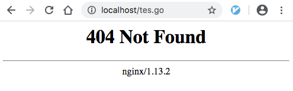
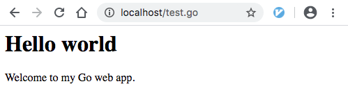
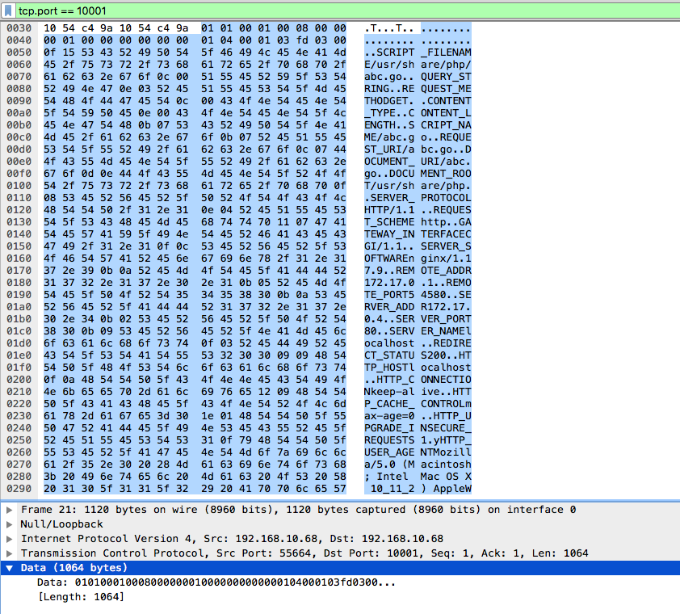
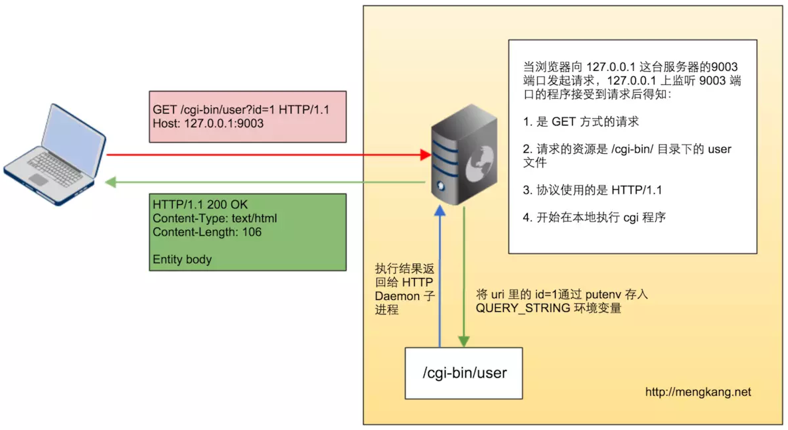
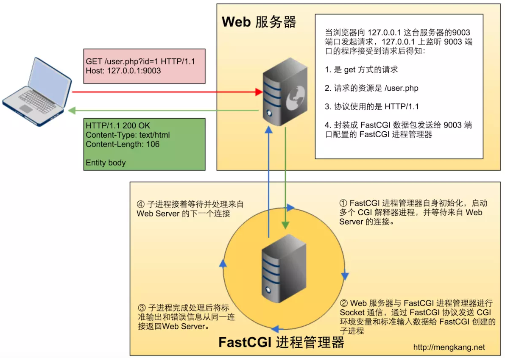

准备
Nginx 配置
user root admin;
worker_processes 2;
events {
worker_connections 1024;
}
http {
include mime.types;
default_type text/html;
gzip on;
gzip_types text/css text/x-component application/x-javascript application/javascript text/javascript text/x-js text/richtext image/svg+xml text/plain text/xsd text/xsl text/xml image/x-icon;
sendfile on;
server {
listen 80;
server_name localhost;
autoindex on;
root /var/www;
index index.html;
location / {
try_files $uri =404;
}
# 以 .go 结尾的 url 都通过 fastcgi 转发到 localhost:10000 处
location ~ \.go$ {
try_files $uri =404;
fastcgi_pass localhost:10000;
fastcgi_param SCRIPT_FILENAME $document_root$fastcgi_script_name;
include fastcgi_params;
}
try_files $uri $uri.html =404;
}
}
Go FastCGI 代码
// main.go
package main
import (
"fmt"
"io"
"net"
"net/http"
"net/http/fcgi"
"os"
)
type FastCGIServer struct {
}
func (s FastCGIServer) ServeHTTP(resp http.ResponseWriter, req *http.Request) {
for header, values := range req.Header {
fmt.Println(header, "=>", values)
}
defer req.Body.Close()
io.Copy(os.Stdout, req.Body)
resp.Write([]byte("<h1>Hello world</h1><p>Welcome to my Go web app.</p>"))
}
func main() {
listener, _ := net.Listen("tcp", "127.0.0.1:10000")
srv := new(FastCGIServer)
fcgi.Serve(listener, srv)
}
创建将要访问的 Go 文件
$ sudo touch /var/www/test.go
说明
Nginx 配置中，主要的配置是：
location ~ \.go$ {
try_files $uri =404;
fastcgi_pass localhost:10000;
fastcgi_param SCRIPT_FILENAME $document_root$fastcgi_script_name;
include fastcgi_params;
}
其中以上配置又以fastcgi_pass localhost:10000;为主，localhost:10000就是 Go FastCGI 代码中监听的地址，配置的作用就是在 Nginx 接收客户端以.go结尾的 URL 的 HTTP 请求时，将 HTTP 请求封装到 FastCGI 协议，再发送到localhost:10000对应的 socket 中；Go 代码接收到 FastCGI 请求，从中解析出 HTTP 请求报文进行相应的业务处理，然后生成 FastCGI 响应报文给 Nginx；Nginx 解析出 FastCGI 响应中的 HTTP 报文，最后将 HTTP 响应报文发送给客户端。
Go 的代码没什么好说的，就是生成 HTML 内容。
由于 Nginx 配置了root /var/www;，所以在/var/www中创建一个test.go文件，否则会报 404。只有存在请求文件时才能转发到localhost:10000。
验证
先启动 Nginx 服务器，再运行 Go 程序：
$ go run main.go
访问不存在的文件

访问存在的文件

访问tes.go时，由于文件不存在，Nginx 并不会进行报文转发；访问test.go时，文件存在，符合重定向的规则，于是将 HTTP 报文封装到 FastCGI 报文中，转发到localhost:10000中，如 Go 的 FastCGI 后端代码所示，接收到请求后，Go 程序会将一段 HTML 代码发送回 Nginx 中，Nginx 再将 HTTP 报文发到浏览器，效果如上所示。
FastCGI 请求报文初探
由于技术还不过关，只能用笨方法分析报文了。用命令strace -p pid看了下 PHP-FPM 的系统调用，发现poll之后调用了五次read，前面三个固定长度的大概就是元信息吧，第四个就是跟转发的内容相关的，最后一个应该就是结束元信息吧？
root@7f16318cabb2:/usr/share/php# strace -p 6
strace: Process 6 attached
accept(9, {sa_family=AF_INET6, sin6_port=htons(41140), inet_pton(AF_INET6, "::ffff:172.17.0.4", &sin6_addr), sin6_flowinfo=htonl(0), sin6_scope_id=0}, [112->28]) = 3
poll([{fd=3, events=POLLIN}], 1, 5000) = 1 ([{fd=3, revents=POLLIN}])
times({tms_utime=0, tms_stime=0, tms_cutime=0, tms_cstime=0}) = 4297319044
read(3, "\1\1\0\1\0\10\0\0", 8) = 8
read(3, "\0\1\0\0\0\0\0\0", 8) = 8
read(3, "\1\4\0\1\3\326\2\0", 8) = 8
read(3, "\17:SCRIPT_FILENAME/usr/share/php/"..., 984) = 984
read(3, "\1\4\0\1\0\0\0\0", 8) = 8
下图是用 Wireshark 捕获的 FastCGI 报文中的一部分：

看到上图的内容应该感觉很熟悉吧？可见的 ASCII 字符都跟服务器以及 HTTP 请求报文相关的内容。
也可以使用以下程序简单感受一下。
package main
import (
"net"
"log"
"fmt"
)
func main() {
l, err := net.Listen("tcp", ":10001")
if err != nil {
log.Println("error listen:", err)
return
}
defer l.Close()
log.Println("listen ok", l.Addr())
for {
conn, err := l.Accept()
if err != nil {
log.Println("accept error:", err)
break
}
buf := make([]byte, 8)
buf2 := make([]byte, 8192)
n, _ := conn.Read(buf)
fmt.Println(buf[:n])
n, _ = conn.Read(buf)
fmt.Println(buf[:n])
n, _ = conn.Read(buf)
fmt.Println(buf[:n])
n, _ = conn.Read(buf2)
for _, v := range buf2[:n] {
fmt.Printf("%c", v)
}
fmt.Printf("END\n")
conn.Close()
}
}
只需要将 Nginx 的转发地址修改成localhost:10001，现在请求任何 go 文件即可在终端看到报文输出。至于更详细的报文格式，等有机会啃完协议 RFC 之后再补充。
与 CGI 的区别
CGI(Common Gateway Interface)
工作原理
Web 服务器接收到动态请求时，会启动对应的 CGI 程序；CGI 程序处理完请求后，将数据返回给 Web 服务器；Web 服务器再把结果返回给客户端。
CGI 特点
-
高并发时性能差：由于 CGI 程序每次接收到请求时都会启动一个进程，会有较大的开销。
-
安全性较差。

FastCGI(Fast Common Gateway Interface)
FastCGI 是 CGI 的增强版本，由 CGI 发展改进而来，主要用于提高 CGI 程序性能，类似于 CGI。
工作原理
Web 服务器启动的同时，加载 FastCGI 进程管理器。FastCGI 初始化之后，启动多个 CGI 解析器进程等待 Web 服务器的连接；Web 服务器接收到动态请求时，FastCGI 进程管理器选择并连接一个 CGI 解析器；Web 服务器会将相关环境变量和标准输入发送到 FastCGI 子进程进行处理；FastCGI 子进程完成处理后将数据按照 CGI 规定的格式返回给 Web 服务器，然后等待下一次请求。
FastCGI 特点
-
FastCGI 程序接口采用 C/S 结构，可以将 Web 服务器和脚本解析服务器分开，独立于 Web 服务器运行，提高 Web 服务器的并发性能和安全性。
-
FastCGI 不依赖于任何 Web 服务器。
-
FastCGI 程序在修改配置时可以进行平滑重启加载新配置。
-
常驻内存，不必每次创建新进程，速度较快。
-
内存消耗较大，注意进程池的数量。
